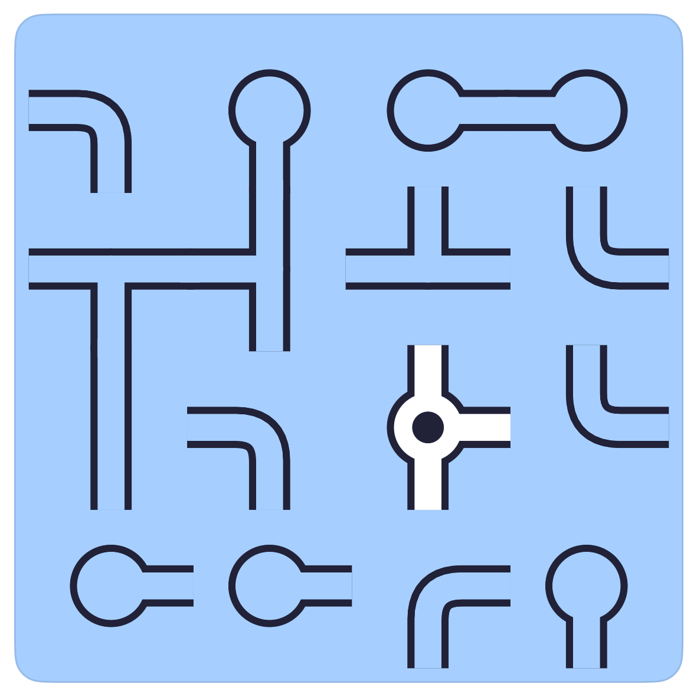
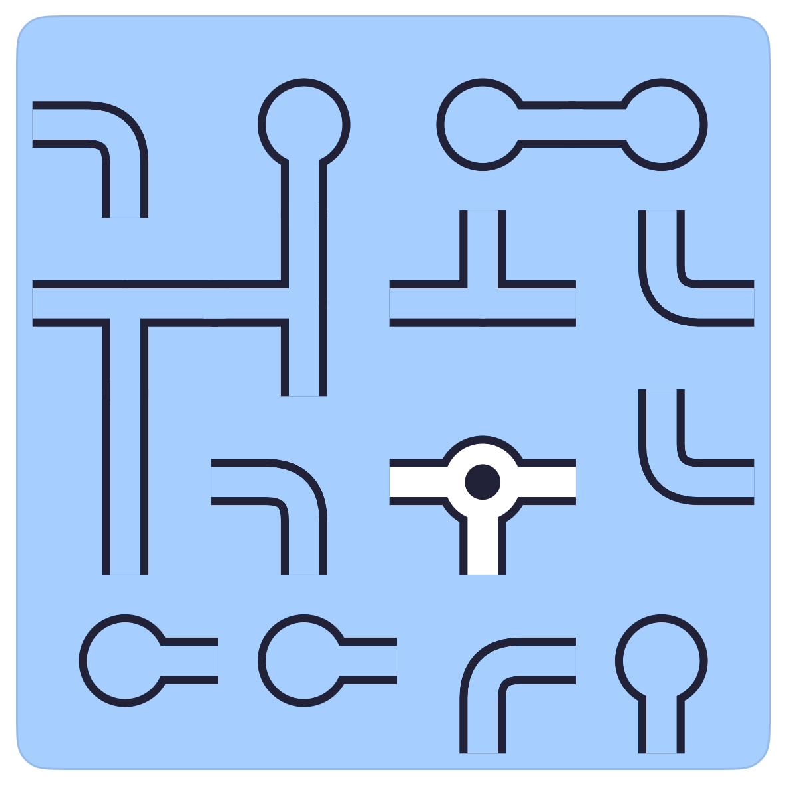
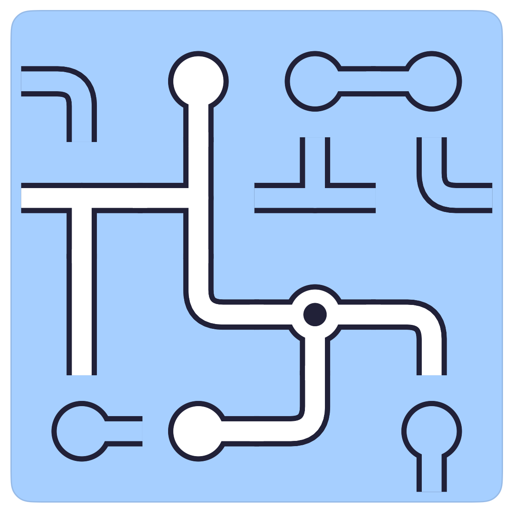
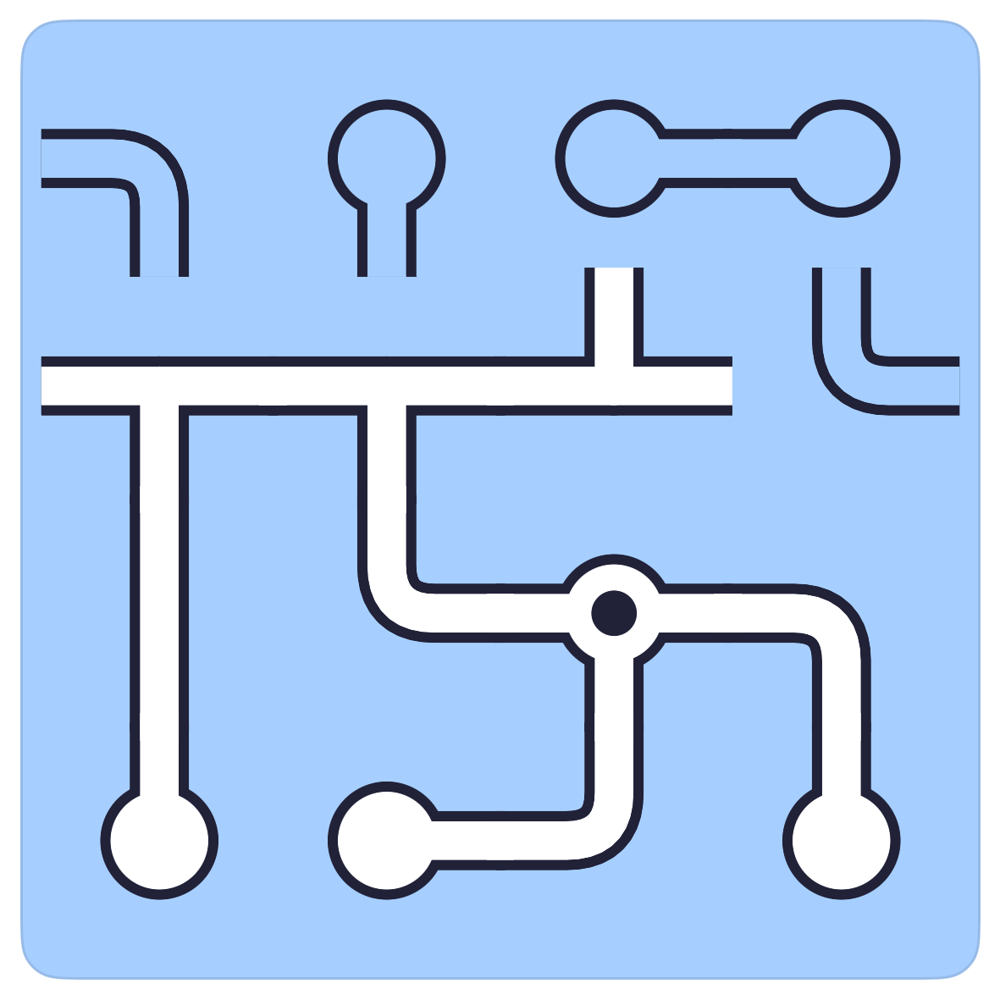
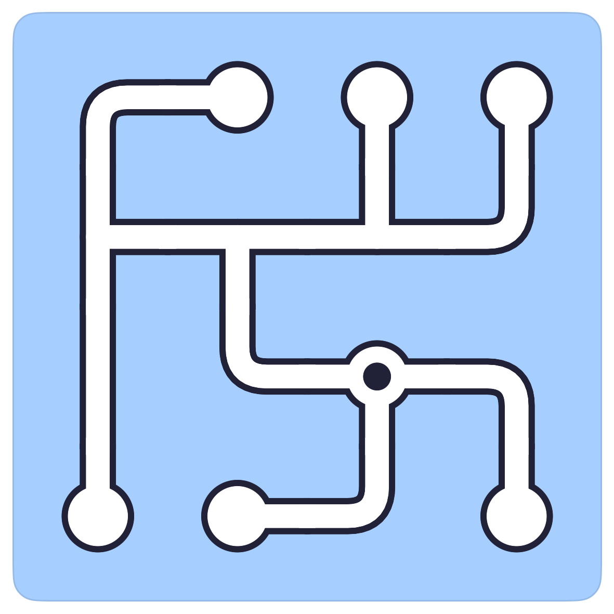

How to play Pipes.
Pipes is the rotate-the-pieces puzzle: every piece is a bit of plumbing turned the wrong way, and you spin them until the water from the source flows into all of them. Start at the source and work outward.
The board.
A 4 by 4 grid of pipe pieces: straights, corners, T-junctions and dead ends. One piece is the source, marked with a dot. Water that reaches a piece is drawn bright; dry pipe is drawn dark.

The rule.
Tap a piece to turn it a quarter turn clockwise. Every piece on the board is part of the finished network, so nothing is a red herring.
Start at the source.
The source is the only piece you know is wet. Turn it so its openings point at neighbours that can accept water, then follow the water: each newly wet piece tells you which way the next one has to face.




Common questions.
Can a piece be left dry?
No. Every piece on the board belongs to the network. If one stays dark at the end, something near it is still turned wrong.
What counts as a leak?
An opening that points at the board's edge or at a neighbour with no opening to meet it. The board is finished only when every opening is met by another.